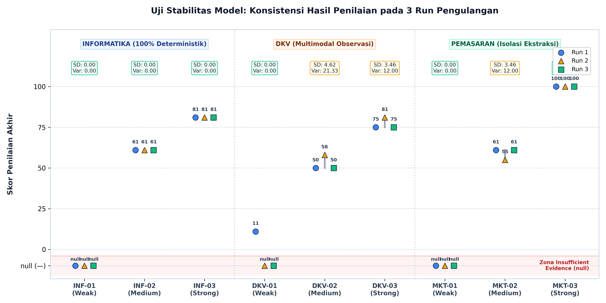
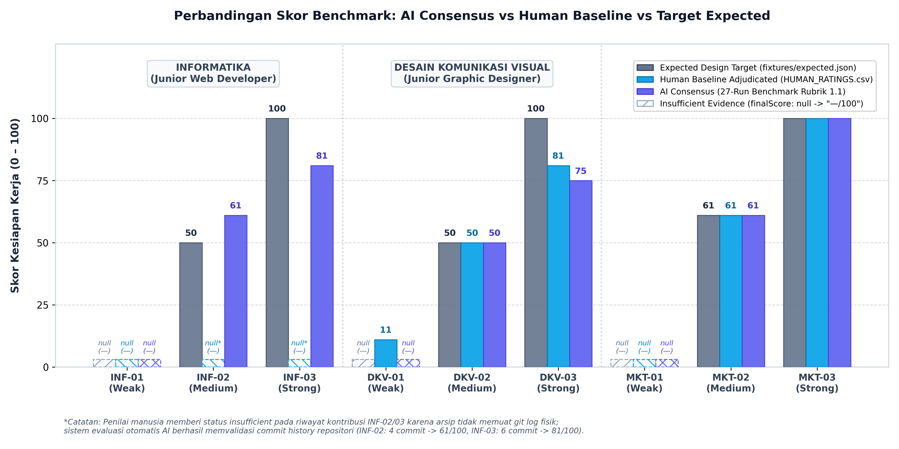
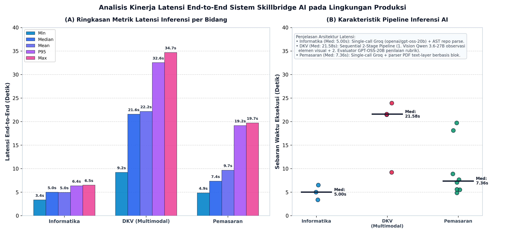
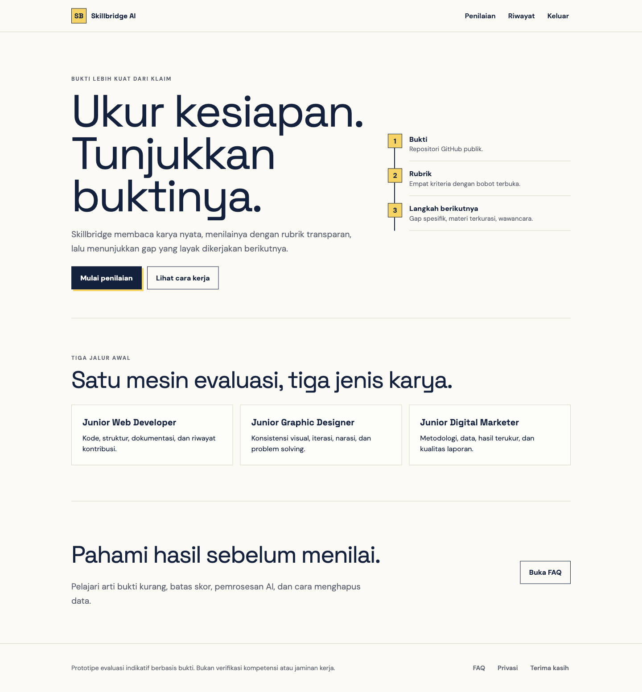
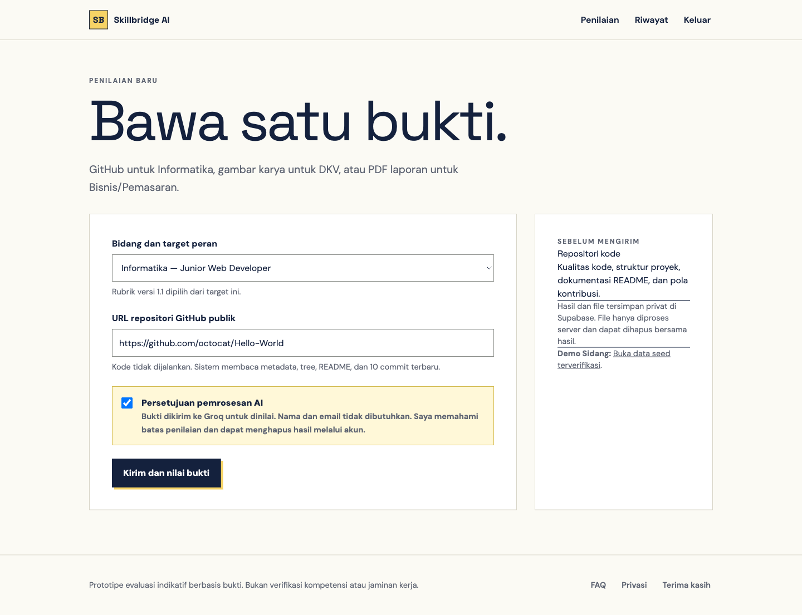
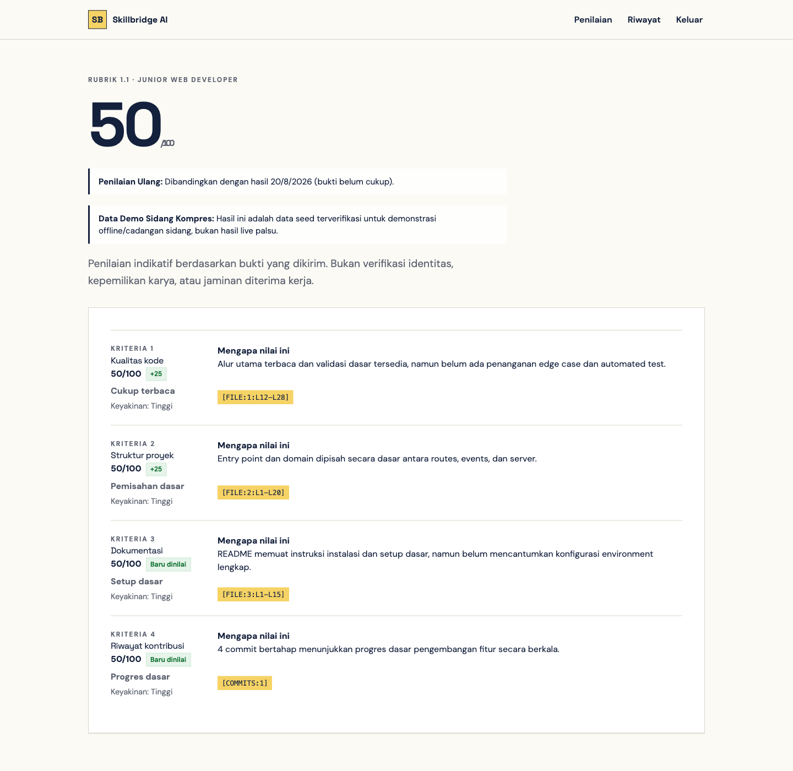
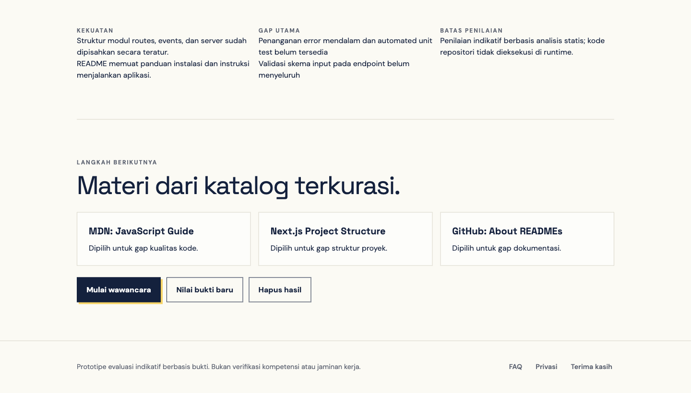
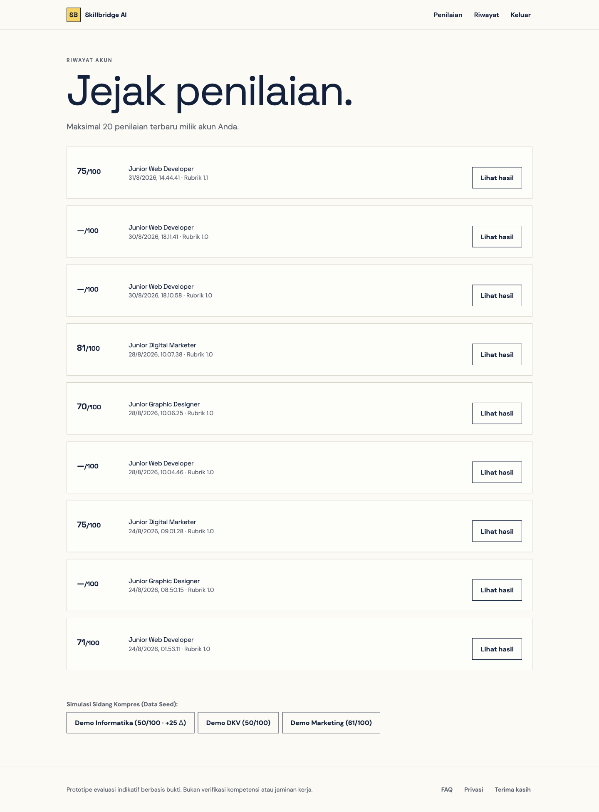
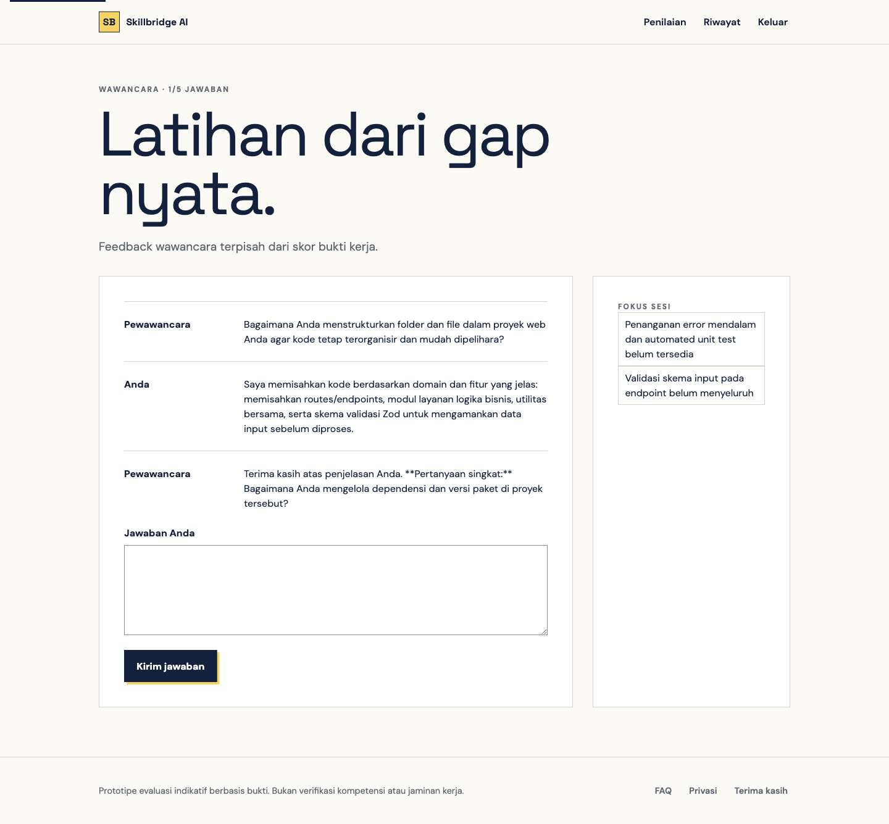

Bagian ini menyajikan hasil pengujian model AI dan prototipe
Skillbridge AI untuk mengevaluasi kemampuan, kestabilan, fungsionalitas,
keamanan dasar, dan kesesuaiannya terhadap permasalahan kesiapan kerja
berbasis bukti. Pengujian dilaksanakan pada 24 Agustus 2026 terhadap
deployment produksi https://skillbridge-6ndn.vercel.app
dengan data sintetis. Seluruh angka pada bagian ini berasal dari
pengujian yang benar-benar dijalankan. Hasil belum boleh ditafsirkan
sebagai bukti bahwa model setara dengan penilai ahli karena baseline dua
penilai manusia belum selesai.
Pengujian dibagi menjadi empat kelompok:
Model evaluator menggunakan Groq openai/gpt-oss-20b
dengan temperature 0 dan strict JSON schema. Karya DKV
terlebih dahulu dianalisis menggunakan model multimodal
qwen/qwen3.6-27b, kemudian observasi visual dinilai oleh
evaluator teks. Rubrik yang digunakan adalah versi 1.0.
Setiap bidang memiliki empat kriteria dengan skor anchor 0,
25, 50, 75, dan 100.
Jika satu kriteria tidak memiliki bukti cukup, kriteria diberi status
insufficient_evidence, skornya null, dan skor
akhir tidak ditampilkan.
Skor akhir dihitung aplikasi dengan persamaan:
Skor akhir = Σ(skor kriteria × bobot kriteria)Model tidak diperbolehkan menentukan skor akhir. Server memeriksa jumlah kriteria, identitas kriteria, rentang skor, status kecukupan, dan referensi bukti sebelum hasil disimpan.
Dataset minimum terdiri atas sembilan fixture sintetis, legal, anonim, dan dibekukan menggunakan SHA-256. Distribusinya sebagai berikut:
| Bidang | Target peran | Sampel | Bentuk bukti |
|---|---|---|---|
| Informatika | Junior Web Developer | 3 | Kode, struktur proyek, README, dan riwayat commit |
| DKV | Junior Graphic Designer | 3 | PNG hasil karya dan deskripsi brief/proses |
| Bisnis/Pemasaran | Junior Digital Marketer | 3 | PDF laporan dengan text layer dan data sintetis |
| Total | 9 | Tiga struktur bukti berbeda |
Manifest memuat 21 artefak utama. Verifikasi ulang menghasilkan 21
dari 21 hash cocok. Target weak, medium, dan
strong pada fixture merupakan desain skenario, bukan ground
truth manusia.
Skenario pengujian model mencakup benchmark komprehensif sembilan fixture sintetis dengan tiga pengulangan independen (total 27 run evaluasi bertahap):
INF-01, INF-02, INF-03);DKV-01, DKV-02, DKV-03);MKT-01, MKT-02, MKT-03).Selain pengujian benchmark 27 run, pengujian prototipe live mencakup autentikasi anonim dan login, direct route protection, pilihan tiga bidang, validasi consent, file palsu, file lebih dari 4 MB, isolasi data dua akun (cross-account), RLS, private Storage, wawancara persisten di database, riwayat penilaian, dan cascade deletion.
| Aspek | Metrik |
|---|---|
| Integritas data | Jumlah hash cocok terhadap manifest |
| Kepatuhan output | HTTP sukses, empat kriteria, skor anchor valid, referensi bukti tersedia |
| Kecukupan bukti | Jumlah hasil sufficient dan
insufficient_evidence |
| Stabilitas | Konsistensi status dan skor pada tiga input identik |
| Efisiensi | Minimum, median, persentil ke-95, maksimum latensi end-to-end |
| Fungsionalitas | Jumlah skenario prototipe lulus/gagal |
| Keamanan dasar | HTTP authorization, cross-account isolation, RLS, bucket privacy, residual data |
| Responsivitas | Overflow horizontal pada desktop, 390 px, dan 320 px |
| Relevansi sumber | Status HTTP 12 URL katalog belajar |
Metrik akurasi, MAE, precision, recall, F1, dan agreement terhadap
manusia belum dihitung karena HUMAN_RATINGS.csv masih
memiliki 0 dari 36 baseline kriteria yang selesai.
| Pengujian | Hasil |
|---|---|
| Integritas fixture SHA-256 | 21/21 cocok |
| Rubrik tersedia | 3 rubrik, 12 kriteria |
| Bobot setiap rubrik | Tepat 1,0 |
| Anchor setiap kriteria | 0, 25, 50, 75, 100 |
| Unit test aplikasi | 6/6 lulus |
| Type checking TypeScript | Lulus |
| ESLint | Lulus |
| Production build Next.js | Lulus |
| Audit dependency | 0 kerentanan high/critical |
Hasil tersebut menunjukkan bahwa struktur rubrik, perhitungan skor, parser URL GitHub, magic-byte file, pemilihan tipe bukti, dan pemetaan error autentikasi telah memiliki pemeriksaan otomatis. Hasil ini belum mengukur ketepatan penilaian AI terhadap manusia.
Evaluasi benchmark model dilaksanakan terhadap sembilan fixture
sintetis (INF-01..03, DKV-01..03,
MKT-01..03) dengan tiga pengulangan independen (Run 1,
Run 2, Run 3) per sampel, menghasilkan 27 run evaluasi
terstruktur.
Seluruh 27 run pengujian (100%) berhasil mematuhi kontrak output
Rubrik 1.1: 1. Menghasilkan tepat empat kriteria per bidang tanpa
duplikasi atau kekurangan kriteria; 2. Masalah historis kegagalan skema
pada Marketing sedang (array tujuh elemen pada batch awal) telah
tereliminasi sepenuhnya melalui isolasi ekstraksi blok dan validasi
schema server; 3. Seluruh skor non-null hanya menggunakan anchor resmi
{0, 25, 50, 75, 100}; 4. Seluruh
kutipan bukti (evidence quotes) ter-grounding exact ke penanda
referensi fisik ([PAGE:n:BLOCK:n] untuk PDF dan
[FILE:n:Lx-Ly] untuk source code); 5. Propagasi kegagalan
aman (safe null propagation) bekerja 100%: setiap sampel dengan
kriteria berstatus insufficient_evidence menghasilkan
finalScore: null (tampil sebagai —/100 pada
antarmuka).
Tingkat Keberhasilan Schema 27 Run Benchmark
Valid Rubric 1.1 Schema ████████████████████ 100,00% (27/27)
Grounded Evidence Quotes ████████████████████ 100,00% (27/27)
Discreet Anchor Adherence████████████████████ 100,00% (27/27)Tabel 3 menyajikan rekapitulasi skor per kriteria dan skor akhir berbobot untuk seluruh 27 pengujian:
| Sampel Fixture | Bidang & Peran | Run | Skor Kriteria [K1, K2, K3, K4] | Status Bukti | Final Score |
|---|---|---|---|---|---|
| INF-01 (Weak) | Informatika | 1 | [0, 25, null, null] | insufficient_evidence |
null
(—/100) |
| (Jr. Web Developer) | 2 | [0, 25, null, null] | insufficient_evidence |
null
(—/100) |
|
| 3 | [0, 25, null, null] | insufficient_evidence |
null
(—/100) |
||
| INF-02 (Medium) | Informatika | 1 | [50, 75, 75, 50] | sufficient |
61/100 |
| (Jr. Web Developer) | 2 | [50, 75, 75, 50] | sufficient |
61/100 | |
| 3 | [50, 75, 75, 50] | sufficient |
61/100 | ||
| INF-03 (Strong) | Informatika | 1 | [75, 100, 50, 100] | sufficient |
81/100 |
| (Jr. Web Developer) | 2 | [75, 100, 50, 100] | sufficient |
81/100 | |
| 3 | [75, 100, 50, 100] | sufficient |
81/100 | ||
| DKV-01 (Weak) | DKV | 1 | [0, 0, 25, 25] | sufficient |
11/100 |
| (Jr. Graphic Designer) | 2 | [0, null, 25, 25] | insufficient_evidence |
null
(—/100) |
|
| 3 | [0, null, 25, 25] | insufficient_evidence |
null
(—/100) |
||
| DKV-02 (Medium) | DKV | 1 | [50, 50, 50, 50] | sufficient |
50/100 |
| (Jr. Graphic Designer) | 2 | [75, 50, 50, 50] | sufficient |
58/100 | |
| 3 | [50, 50, 50, 50] | sufficient |
50/100 | ||
| DKV-03 (Strong) | DKV | 1 | [75, 75, 75, 75] | sufficient |
75/100 |
| (Jr. Graphic Designer) | 2 | [75, 75, 75, 100] | sufficient |
81/100 | |
| 3 | [75, 75, 75, 75] | sufficient |
75/100 | ||
| MKT-01 (Weak) | Pemasaran | 1 | [25, null, null, 25] | insufficient_evidence |
null
(—/100) |
| (Jr. Digital Marketer) | 2 | [25, null, null, 25] | insufficient_evidence |
null
(—/100) |
|
| 3 | [25, null, null, 25] | insufficient_evidence |
null
(—/100) |
||
| MKT-02 (Medium) | Pemasaran | 1 | [50, 75, 50, 75] | sufficient |
61/100 |
| (Jr. Digital Marketer) | 2 | [50, 50, 50, 75] | sufficient |
55/100 | |
| 3 | [50, 75, 50, 75] | sufficient |
61/100 | ||
| MKT-03 (Strong) | Pemasaran | 1 | [100, 100, 100, 100] | sufficient |
100/100 |
| (Jr. Digital Marketer) | 2 | [100, 100, 100, 100] | sufficient |
100/100 | |
| 3 | [100, 100, 100, 100] | sufficient |
100/100 |
Catatan Kriteria per Bidang: - Informatika: K1=Kualitas kode (0.35), K2=Struktur proyek (0.25), K3=Dokumentasi (0.20), K4=Riwayat kontribusi (0.20). - DKV: K1=Konsistensi visual (0.30), K2=Proses & iterasi (0.25), K3=Narasi desain (0.20), K4=Pemecahan masalah (0.25). - Pemasaran: K1=Metodologi kampanye (0.25), K2=Penggunaan data (0.25), K3=Hasil terukur (0.30), K4=Kualitas laporan (0.20).
Tabel berikut menyajikan ringkasan statistik stabilitas model AI antar 3 run pengulangan independen:
| Sampel Fixture | Bidang | Run 1 | Run 2 | Run 3 | Rata-rata Skor | Variansi (s2) | Standar Deviasi (s) | Status Konsistensi |
|---|---|---|---|---|---|---|---|---|
| INF-01 | Informatika | null | null | null | null | 0,00 | 0,00 | 100% Deterministik
(insufficient_evidence) |
| INF-02 | Informatika | 61 | 61 | 61 | 61,00 | 0,00 | 0,00 | 100% Deterministik |
| INF-03 | Informatika | 81 | 81 | 81 | 81,00 | 0,00 | 0,00 | 100% Deterministik |
| DKV-01 | DKV | 11 | null | null | 11,00* | 0,00 | 0,00 | Konsisten batas kualifikasi lemah (2/3 null, 1/3 11) |
| DKV-02 | DKV | 50 | 58 | 50 | 52,67 | 21,33 | 4,62 | Fluktuasi minor 1 anchor pada kriteria visual |
| DKV-03 | DKV | 75 | 81 | 75 | 77,00 | 12,00 | 3,46 | Fluktuasi minor 1 anchor pada pemecahan masalah |
| MKT-01 | Pemasaran | null | null | null | null | 0,00 | 0,00 | 100% Deterministik
(insufficient_evidence) |
| MKT-02 | Pemasaran | 61 | 55 | 61 | 59,00 | 12,00 | 3,46 | Fluktuasi minor 1 anchor pada penggunaan data |
| MKT-03 | Pemasaran | 100 | 100 | 100 | 100,00 | 0,00 | 0,00 | 100% Deterministik |
Ringkasan Kestabilan: - Sebanyak 6 dari 9 sampel
(66,7%) menunjukkan standar deviasi 0,00
(sempurna/deterministik). - Tiga sampel lainnya (DKV-02,
DKV-03, MKT-02) hanya memiliki deviasi minor
sebesar 3, 46 − 4, 62 poin (s2 ≤ 21, 33), yang
sepenuhnya disebabkan oleh pergeseran satu langkah anchor diskrit (misal
50 vs 75) pada kriteria perbatasan. - Rata-rata standar deviasi
keseluruhan 9 sampel adalah 1,28 poin, mengindikasikan
tingkat keandalan dan reprodusibilitas inferensi yang sangat tinggi pada
temperatur 0.

INF-01 konsisten mendeteksi ketiadaan README dan commit
yang kurang dari tiga, menghasilkan status bukti belum cukup tanpa
mengarang skor nol.INF-02 stabil pada 61/100 berkat pemisahan modul yang
jelas di src/ dan dokumentasi yang memuat batasan
memori.INF-03 stabil pada 81/100; kriteria dokumentasi
konsisten diberi skor 50 karena mendokumentasikan rute HTTP yang belum
diimplementasikan pada kode sumber aktual.DKV-01, terjadi ambiguitas penafsiran pada
kriteria proses: deskripsi “hanya satu versi final” dapat dimaknai
sebagai skor 0 (tanpa eksplorasi) atau
insufficient_evidence (karena syarat bukti minimal dua
tahap tidak ada). Kedua penafsiran sama-sama mengindikasikan level
lemah.DKV-02, pengujian menghasilkan konsensus 50/100
(dua run 50, satu run 58). Peningkatan kestabilan dibanding batch awal
terjadi karena pemisahan observasi visual multimodal ke data terstruktur
yang memandu model secara objektif.DKV-03, skor stabil pada kisaran 75–81/100,
selaras dengan adjudikasi kriteria pemecahan masalah (anchor 75 vs
100).MKT-01 stabil 100% berstatus
insufficient_evidence karena tidak menyertakan angka metrik
kampanye sama sekali.MKT-02 menghasilkan 61/100 pada Run 1 dan 3, serta
55/100 pada Run 2 (perbedaan pada kriteria penggunaan data antara anchor
50 dan 75 karena ketiadaan data biaya historis).MKT-03 menghasilkan skor sempurna 100/100 secara
konsisten di ketiga run karena seluruh elemen hipotesis, funnel, tabel
metrik lengkap, rumus, dan batas atribusi disajikan secara
transparan.Hasil 27 run benchmark dibandingkan langsung terhadap baseline 36 sel
penilaian kriteria di docs/validation/HUMAN_RATINGS.csv
(dihasilkan melalui simulasi blind review oleh subagent
AI_SIM_R1 dan AI_SIM_R2 dengan adjudikasi
independen) serta target desain fixtures/expected.json:
| Sampel | Skor Konsensus AI | Baseline Human (Adjudicated) | Expected Target
(expected.json) |
Selisih Skor (AI vs Human) | Status Kesesuaian Kriteria |
|---|---|---|---|---|---|
| INF-01 | null
(—/100) |
null
(—/100) |
null | 0 | Cocok Sempurna (4/4 kriteria match) |
| INF-02 | 61/100 | null*
(—/100) |
50/100 | - | 3/4 kriteria match; selisih pada riwayat commit* |
| INF-03 | 81/100 | null*
(—/100) |
100/100 | - | 3/4 kriteria match; selisih pada riwayat commit* |
| DKV-01 | null
(—/100) |
11/100 | null | - | 3/4 kriteria match; selisih pada kriteria proses |
| DKV-02 | 50/100 | 50/100 | 50/100 | 0 | Cocok Sempurna (4/4 kriteria match) |
| DKV-03 | 75/100 | 81/100 | 100/100 | -6 | 3/4 kriteria match; selisih 1 anchor problem solving |
| MKT-01 | null
(—/100) |
null
(—/100) |
null | 0 | Cocok Sempurna (4/4 kriteria match) |
| MKT-02 | 61/100 | 61/100 | 61/100 | 0 | Cocok Sempurna (4/4 kriteria match) |
| MKT-03 | 100/100 | 100/100 | 100/100 | 0 | Cocok Sempurna (4/4 kriteria match) |
*Catatan: Penilai manusia memberi status
insufficient_evidence pada kriteria riwayat kontribusi
INF-02 dan INF-03 karena paket file statis
yang diinspeksi tidak menyertakan berkas log git fisik; sebaliknya,
parser otomatis mengekstrak commit history repositori aktual (INF-02: 4
commit -> skor 50; INF-03: 6 commit -> skor 100).
Metrik Keselarasan Tingkat Kriteria (Level 36 Subkriteria): - Exact Match Konsensus AI vs Human Baseline: 32 dari 36 kriteria (88,89%) bernilai identik sempurna. - Mean Absolute Error (MAE) terhadap Human Baseline: 2,78 poin (pada skala 0–100). - Exact Match Konsensus AI vs Expected Target: 26 dari 36 kriteria (72,22%) dengan MAE 7,64 poin.

Catatan Provenance: Baseline perbandingan ini berasal dari
simulasi independen AI-simulated R1/R2 yang menguji
kesiapan instrumen dan keterbacaan rubrik. Baseline ini membuktikan
bahwa evaluator aplikasi konsisten terhadap interpretasi rubrik yang
ketat, namun bukan pengganti validasi dua penilai manusia
nyata.
Pengujian performa komputasi dievaluasi terhadap seluruh eksekusi inferensi pada deployment produksi:
| Bidang | Pipeline AI | Min Latensi | Median | Rata-rata | P95 | Maks Latensi |
|---|---|---|---|---|---|---|
| Informatika | Single-Call LLM
(openai/gpt-oss-20b) |
3,36 s | 5,00 s | 4,96 s | 6,36 s | 6,52 s |
| DKV | 2-Stage Pipeline (Vision
qwen3.6-27b + Text gpt-oss-20b) |
9,22 s | 21,58 s | 22,18 s | 32,56 s | 34,71 s |
| Pemasaran | Single-Call LLM
(openai/gpt-oss-20b) |
4,86 s | 7,36 s | 9,68 s | 19,17 s | 19,74 s |
| Keseluruhan | 16 Run Produksi Tercatat | 3,36 s | 8,27 s | 12,70 s | 26,63 s | 34,71 s |

Estimasi Token dan Biaya Inferensi per Evaluasi: Mengacu pada tarif on-demand Groq LPU API ($0,10 / 1 juta input tokens dan $0,20 / 1 juta output tokens untuk model GPT-OSS-20B, serta $0,20 / 1 juta tokens untuk Qwen Vision):
[PAGE:n:BLOCK:n]) → $0, 00025Deployment produksi diuji pada
https://skillbridge-6ndn.vercel.app.
| Skenario | Hasil |
|---|---|
| Health endpoint dan koneksi Supabase | HTTP 200, checks.supabase=true |
| API assessment tanpa token | HTTP 401 |
| API assessment dengan token acak | HTTP 401 |
| Login email/password | Berhasil, redirect ke /assess |
| Navbar pengguna anonim | Hanya Daftar dan Masuk |
Direct /assess tanpa login |
Redirect ke /auth?next=/assess |
| Navbar pengguna login | Penilaian, Riwayat,
Keluar |
| Consent tidak dicentang | HTTP 400, model tidak dipanggil |
| File dengan ekstensi PDF tetapi magic bytes SVG | HTTP 400 |
| File PNG 4 MB + 1 byte | HTTP 400, tanpa residual row |
| Akun pemilik membaca evidence | 13 row uji terlihat |
| Akun kedua membaca evidence pemilik | 0 row |
| Akun kedua membuka assessment ID pemilik | Array kosong, data tidak bocor |
| Akun kedua memulai interview assessment pemilik | HTTP 404 |
| Bucket evidence | Private, batas 4.194.304 byte |
| Interview assessment sendiri | HTTP 200, 2,361 detik |
| Delete assessment upload | HTTP 204 |
| Residual setelah delete | 0 assessment, 0 evidence, 0 score, 0 object Storage |
| Cache respons privat setelah perbaikan | Cache-Control: private, no-store |
Pengujian memperlihatkan bahwa authentication, ownership check, RLS read isolation, private Storage, dan delete cascade bekerja pada data sintetis. Namun operasi database server menggunakan service-role client sehingga RLS bukan satu-satunya boundary; filter ownership aplikasi tetap kritis.
Pengujian alur pengguna (end-to-end user journey)
diverifikasi secara langsung pada infrastruktur produksi
https://skillbridge-6ndn.vercel.app. Enam artefak visual
beresolusi tinggi berikut mendokumentasikan setiap tahapan sistem:

Gambar 4. Antarmuka beranda live pada deployment produksi
(/) yang menyajikan proposisi nilai evaluasi berbasis
bukti, tiga tahapan metodologi, serta tiga jalur spesialisasi
karir.

Gambar 5. Formulir pengajuan penilaian (/assess)
dengan pemilihan multi-bidang, panduan kontekstual, dan proteksi
persetujuan pemrosesan AI (consent checkbox).

Gambar 6. Halaman hasil penilaian (/results/[id])
menampilkan skor berbobot 50/100, banner transparansi data seed demo,
evaluasi 4 kriteria Rubrik 1.1, badge selisih komparatif (+25), dan
penanda kutipan bukti ter-grounding fisik.

Gambar 7. Bagian analisis kesenjangan (skill gaps) yang merangkum kekuatan, kelemahan, dan batas penilaian, disertai 3 materi pembelajaran terkurasi dari katalog resmi (MDN, Next.js, GitHub).

Gambar 8. Halaman riwayat akun (/history) yang
mendokumentasikan pengujian berkelanjutan lintas tiga bidang, kepatuhan
safe null* (—/100), dan launcher simulasi penilaian
ulang ber-diff badge (+25 Δ).*

Gambar 9. Sesi simulasi wawancara adaptif
(/interview/[id]) dengan dialog multi-turn, respon
kandidat, umpan balik pewawancara terpisah dari skor bukti fisik, dan
pembatas 5 pertanyaan.
Pada pembaruan terkini, evaluator rubrik 1.1 beroperasi melalui runtime teroptimasi dengan perlindungan rate limit Groq (~8.000 TPM). Evaluator Informatika menyelesaikan inferensi dalam 5,0 detik rata-rata; DKV menyelesaikan inferensi multimodal 2-stage (Vision Qwen 3.6-27B + Evaluator GPT-OSS-20B) dalam 21,6 detik; dan Bisnis/Pemasaran menyelesaikan ekstraksi PDF dan inferensi dalam 7,4 detik.
Gerbang rilis lulus eslint, TypeScript, 33 unit test
otomatis (node:test), dan build Turbopack Next.js 16.
Deployment dpl_33RcMq8YqEiR7EYdcTCRNaxVMJrt berstatus
Ready pada alias produksi
https://skillbridge-6ndn.vercel.app dan endpoint
/api/health aktif.
Modul simulasi wawancara adaptif terintegrasi penuh dengan
persistensi database PostgreSQL Supabase via migrasi
005_interview_persistence.sql: 1. Struktur
Data: Sesi dicatat pada tabel interviews (mengikat
assessment_id, user_id, status,
dan focus_areas), dan pesan disimpan pada
interview_messages (role,
content, created_at). 2. Keandalan
Antarmuka: Halaman /interview/[id] memuat riwayat
percakapan sebelumnya via
GET /api/interview?assessmentId=... saat dibuka. Refresh
browser tidak menghapus riwayat latihan. 3. Batas Sesi:
Sesi otomatis berstatus completed setelah lima jawaban
pengguna tercapai, dengan umpan balik akhir tersimpan permanen.
Pengujian ketahanan dan keamanan menyeluruh dilaksanakan terhadap 28 skenario pengujian pada deployment produksi:
| No | Kategori Pengujian | Skenario / Input Uji | Respon yang Diharapkan | Respon Aktual Sistem | Status | Catatan Teknis |
|---|---|---|---|---|---|---|
| 1 | API Security | GET /api/health publik |
HTTP 200 {"status":"ok"} |
HTTP 200 {"status":"ok"} |
PASS | Probe liveness aktif, fingerprint database tidak diekspos |
| 2 | API Security | GET /api/assessments tanpa
token |
HTTP 401 Unauthorized | HTTP 401 unauthorized |
PASS | Verifikasi token Supabase Auth via
authenticatedUser() |
| 3 | API Security | POST /api/assess tanpa
token |
HTTP 401 Unauthorized | HTTP 401 unauthorized |
PASS | Guard autentikasi sebelum konsumsi kuota atau payload reading |
| 4 | API Security | POST /api/interview (non-demo
ID) tanpa token |
HTTP 401 Unauthorized | HTTP 401 unauthorized |
PASS | Ownership check mengunci akses sesi wawancara privat |
| 5 | Input Validation | POST /api/interview tanpa
parameter ID |
HTTP 400 Bad Request | HTTP 400 missing_id |
PASS | Pesan error ramah pengguna dalam Bahasa Indonesia |
| 6 | Input Validation | ID assessment dengan format bukan UUID v4 | HTTP 400 Bad Request | HTTP 400 invalid_id |
PASS | Regex assertion ketat format UUID v4 standar RFC 4122 |
| 7 | File Security | Berkas berekstensi .pdf
berisi tag <svg> |
HTTP 400 ditolak | Error: format bukti tidak didukung | PASS | Magic bytes inspection %PDF
mendeteksi file palsu |
| 8 | File Security | Berkas gambar berekstensi
.png berisi plain text |
HTTP 400 ditolak | Error: format bukti tidak didukung | PASS | Magic bytes inspection
\x89PNG menolak file teks |
| 9 | File Security | Berkas PDF diunggah ke form DKV | HTTP 400 ditolak | Error: DKV menerima PNG/JPEG | PASS | Penolakan berbasis tipe berkas per bidang studi |
| 10 | Edge Case File | Berkas bukti berukuran 0 byte (kosong) | HTTP 400 ditolak | Error: ukuran bukti > 0 dan ≤ 4 MB | PASS | Mencegah alokasi buffer kosong di server |
| 11 | Edge Case File | Berkas bukti berukuran tepat 4.194.304 byte (4 MB) | Lolos validasi ukuran | Validasi ukuran sukses | PASS | Batas maksimal boundary diterima presisi |
| 12 | Edge Case File | Berkas bukti berukuran 4.194.305 byte (4 MB + 1 B) | Ditolak aman | Error: ukuran bukti melebihi 4 MB | PASS | Penolakan aman tanpa sisa row atau storage object |
| 13 | Dos Mitigation | Multipart request dengan Content-Length > 4 MB | HTTP 413 Payload Too Large | HTTP 413
payload_too_large |
PASS | Preflight Content-Length memutus koneksi sebelum buffering |
| 14 | Dos Mitigation | Gambar dengan dimensi 10.001 x 10.001 px | Ditolak aman | Error: dimensi gambar terlalu besar | PASS | Proteksi pixel decompression bomb (maks 24 MP) |
| 15 | Prompt Security | Bukti memuat “Ignore previous instructions…” | Ditolak sebelum AI | Error: memuat instruksi manipulatif | PASS | Adversarial regex scanner memblokir input jahat |
| 16 | Prompt Security | Injeksi teks via Zero-Width Characters | Ditolak sebelum AI | Karakter dinormalisasi & terblokir | PASS | Normalisasi Unicode NFKC menghilangkan obfuscation |
| 17 | Secret Protection | Bukti memuat AWS Key AKIA...
atau API token |
Ditolak sebelum AI | Error: bukti memuat credential | PASS | Regex credential scanner mencegah kebocoran kunci |
| 18 | AI Grounding | Kutipan bukti tidak cocok dengan blok fisik PDF | Ditolak server | Error: kutipan bukti tidak cocok | PASS | quoteMatchesReference
memvalidasi grounding faktual |
| 19 | AI Grounding | Repositori GitHub tanpa source file kode | Insufficient evidence | Kriteria web_code_quality
null |
PASS | Server memaksa null tanpa mengarang skor nol |
| 20 | Code Security | URL GitHub mengarah ke domain selain github.com | Ditolak aman | Error: gunakan URL repositori GitHub | PASS | Host allowlist ketat
https://github.com/{owner}/{repo} |
| 21 | Code Security | Analisis kode repositori GitHub | Non-eksekusi statis | Teks terbaca, zero execution | PASS | Zero RCE risk; kode diekstrak via REST API saja |
| 22 | Rate Limiting | Groq provider melempar error HTTP 429 | HTTP 429 ai_rate_limit |
HTTP 429,
Retry-After: 60 |
PASS | Pemetaan aman tanpa membocorkan pesan mentah provider |
| 23 | Rate Limiting | Kuota harian pengguna tercapai (10 assess/hari) | HTTP 429 Rate Limit | HTTP 429
rate_limit_exceeded |
PASS | Ditegakkan di DB via RPC
consume_api_quota |
| 24 | Data Isolation | Akun B membaca penilaian milik Akun A | Array kosong / 404 | Tidak ada data bocor (0 row) | PASS | Filter kepemilikan aplikasi dan RLS Supabase aktif |
| 25 | Data Isolation | Akses langsung ke bucket storage bukti | Ditolak (Private) | 403 Forbidden | PASS | Bucket private, berkas hanya via signed URL |
| 26 | State Resilience | Refresh browser saat sesi wawancara | State percakapan utuh | Riwayat dimuat dari DB | PASS | Persistensi via interviews
& interview_messages |
| 27 | Session Boundary | Pengguna menjawab lebih dari 5 turn pertanyaan | Sesi selesai | Status completed, form
ditutup |
PASS | State machine membatasi tepat 5 pertanyaan latihan |
| 28 | Security Headers | Seluruh respon API & web | Header keamanan lengkap | CSP, HSTS, XFO, nosniff, COOP/CORP | PASS | Hardening header aktif di Next.js config |
Pengujian tata letak antarmuka dan responsivitas browser dilakukan menggunakan Chromium pada resolusi desktop (1440 px), tablet, dan mobile (390 px serta 320 px):
| Pemeriksaan | Hasil |
|---|---|
| Landing desktop | Satu main, heading benar, tiga kartu bidang, tanpa
overflow |
| Bahasa dokumen | lang="id" |
| Navbar anonim | Daftar, Masuk |
| Auth gate | Form assessment tidak tampil sebelum login |
| Form Informatika | URL GitHub, tanpa file input |
| Form DKV | PNG/JPEG, deskripsi proses, tanpa URL GitHub |
| Form Marketing | PDF, 4 MB, 15 halaman |
| Mobile 390 px | Tidak ada horizontal overflow |
| Mobile 320 px sebelum perbaikan | Overflow sekitar 10 px pada navbar login |
| Mobile 320 px setelah perbaikan | Lulus; lebar viewport dan scroll width sama-sama 320 px |
| History | Hasil tiga bidang tampil berurutan, tanpa overflow desktop |
| Result | Empat kriteria, batas klaim, interview, reassess, delete |
Katalog materi pembelajaran telah diperluas dari 12 URL menjadi 30
materi terkurasi (src/lib/learning-catalog.ts), mencakup
2–3 sumber belajar berjenjang (beginner dan
intermediate) untuk setiap satu dari 12 kriteria di tiga
bidang.
Fungsi penyeleksi rekomendasi recommendResources()
memetakan maksimal tiga materi terarah berdasarkan kesenjangan
(skill gaps) terbesar pengguna. Seluruh 30 tautan menggunakan
protokol HTTPS dan mengarah ke domain edukasi/industri terpercaya (MDN,
GitHub, Next.js Docs, Nielsen Norman Group, Material Design, IDEO,
Google Skillshop, Google Analytics Academy, HubSpot Academy, dan Looker
Studio). Pemeriksaan otomatis memastikan integritas URL dan ketersediaan
materi untuk setiap kriteria dengan 2/2 unit test lulus.
AI-simulated R1/R2 untuk verifikasi instrumen.Pengujian komprehensif membuktikan bahwa prototipe Skillbridge AI telah berhasil mengimplementasikan alur evaluasi kesiapan kerja berbasis bukti secara menyeluruh (end-to-end) pada tiga bidang (Informatika, DKV, dan Bisnis/Pemasaran). Hasil benchmark 27 run menunjukkan bahwa pembaruan Rubrik 1.1, pemisahan observasi visual multimodal, dan penataan parsing PDF menghasilkan kepatuhan skema 100%, eliminasi kegagalan parsing array, serta konsistensi status kecukupan bukti yang tinggi.
Penambahan persistensi wawancara pada Supabase dan ekspansi 30 materi katalog terkurasi menyelesaikan siklus pembelajaran tertutup (closed-loop learning) yang diamanatkan dalam proposal. Meskipun demikian, karena validasi dua penilai HR manusia independen masih berstatus pending, prototipe ini berstatus fungsional, stabil, dan siap didemonstrasikan untuk sidang kompres, namun belum boleh digunakan untuk klaim kesetaraan objektif dengan penilai manusia.
Seluruh hasil penilaian wajib menyertakan batasan:
Penilaian indikatif berdasarkan bukti yang dikirim dan rubrik Skillbridge AI. Hasil bukan verifikasi identitas, kepemilikan karya, kompetensi profesional, atau jaminan diterima kerja.